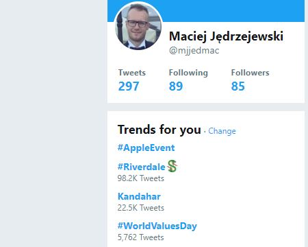

Why to use it? Should I always use it? What benefits can it bring to my application? Data analysis?!
How does the application development process looks like?
I know machine learning - let's start coding! Is it a good way to go?
ML.NET - overview
Why ML.NET? What about Python and R?
ML.NET - algorithms
Algorithm typologies in ML.NET
ML.NET - hands on
From zero to hero - we will create an app for car profitability decisions
"Field of study that gives computers the ability to learn without being explicitly programmed." - Arthur Samuel (1959)
Machine learning is not simple.
The most important are mathematic models and algorithms.
In case of wrong selection of algorithm or incorrect model of reality - our system will be in the best scenario inefficient..
<div id="machineLearning">
<!-- Here we do the magic -->
<section>
<h1>Magic!</h1>
</section>
</div>
Machine learning is a subset of AI. Deep learning is a subset of machine learning.
These keywords are not exchangeable.
Machine learning is a revolution.
We are at the beginning in commercial usage but it already brings results.
A lot of applications - from financial predictions, through users support, till cancer stadium classifications.
Every branch can be affected.
Please try to find such areas in your application. Suggestions, forecasts, image recognition - these are only few examples which can bring it to the next level.
Examples from popular services
Netflix
Facebook

Twitter
Machine learning is a potential problem.
Most of us is able to solve the simple problem.
Unfortunately, day by day we face complex scenarios. Very important thing is to delegate responsibilities to correct professionals.
Many data scientists are willing to program what they modelled. They are lacking knowledge and experience in programming.
Many programmists are willing to model what they will program. They are lacking mathematics knowledge and experience in modelling.
How does the development process look like?
Analysis
Do the analysis of the chosen reality. Define how will input attributes look like and what do we expect as the output
Mathematic model
The most important part. Based on it we will select the algorithm in next steps
Training data
In our case we will put there input attributes and the output
Learning pipeline
Create a pipeline, and then train it with the prepared data
Alghoritm
Take the best fitting algorithm to the scenario (modelled reality)
Result
Start the model and wait for a result
ML.NET - Microsoft way to handle machine learning
We are .NETters. It is more comfortable for us to start in .NET than in other languages.
This is an alternative to existing Python or R solutions.
It is in preview phase.
You can use it in production but there might be breaking changes.
Microsoft puts a lot of effort on this but it is a third topic from the top.
Algorithms division in ML.NET
It will be easy - they said.
Regression
When? In case we would like to predict the market values or taxi fare.
Anomaly detection
When? In case we would like to detect the fraud in the banking system.
Two-classes classification
When? In case we would like to receive positive/negative answer. Yes/no. Acceptable/Unacceptable. Good/bad.
Multi-classes classification
When? In case we would like to receive one of many answers (> 2). Best/Good/Bad/Worst.
Why not use a standard algorithm? Study case of our demo - car acceptability.
Values (output):
Acceptability: unacc, acc, good, vgood
Attributes (input):
buying price: vhigh, high, med, low.
maintenance price: vhigh, high, med, low.
number of doors: 2, 3, 4, 5more.
number of people: 2, 4, more.
luggage size: small, med, big.
safety level: low, med, high.
Standard algorithm
All combinations needed to give a correct prediction: 6912
We need to define all combinations to have a correct result.
Will it be accurate afterwards?
If we do not define all combinations, then think about a programming hell.
Is it still a standard algorithm or do you start machine learning?
Machine learning algorithm
All combinations needed to give a correct prediction: 1728
We need to define as many combinations as it is defined by mathematic model.
If the training data is incorrect, then your model will be wrongly trained.
If there is too much training data, then you just lose resources.